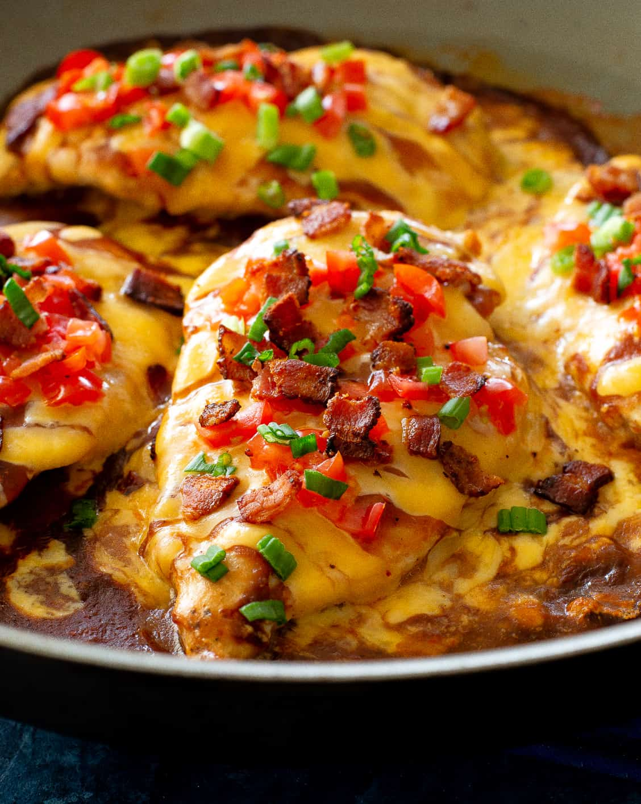
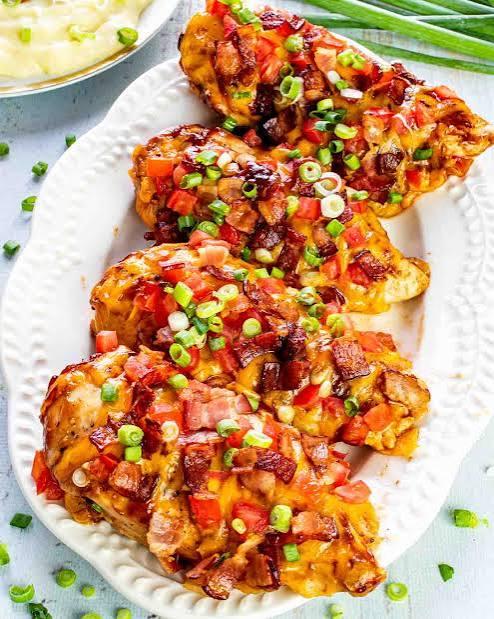

Southern League Chicken
This recipe was inspired by a dish by the same name at Grand Stands restaurant
in Hendersonville, TN. We used to go there all the time as kids, and this recipe
is my attempt to recreate what I remember having there. Even if it isn't exactly
what they made, it's still a pretty good grilled chicken dish.
My partner and sister-in-law jokingly calls it "All-Star Sports Chicken" but
it doesn't really matter what you call it as long as everybody enjoys how it tastes!
I hope you enjoy it as much as I do!

Ingredients
- Chicken Breasts (thighs are good, too)
- Spices to tasts: salt, pepper, onion powder, garlic powder
- One can of Rotel diced tomatoes, drained
- Slices of the cheese of your choice. I like Cheddar or Monterey Jack
- Bacon bits for garnish
- Chives or green onion for garnish
- Sour Cream for garnish
Steps
- Season Chicken Breasts with salt, pepper, onion powder, and garlic powder
Let rest and marinate for 30 minutes
- Preheat grill
- While the chicken is seasoning and the grill is heating,
drain the Rotel can and mix the diced tomoatoes with barbecue sauce.
- Grill chicken breasts as you usually would, 4-5 minutes per side,
depending on the heat of the grill.
>> Make sure the chicken reaches an internal temperature of 145 degrees
before moving to the next step.
- Move grilled chicken breasts to the cool side of the grill
and top with barbecue sauce and rotel mixture.
- Cover chicken breasts with cheese slices and
place cover on the grill, with the vent side over the coals.
Allow cheese to melt for a minute or two
- Garnish and serve with the side of your choice or on a bun.
